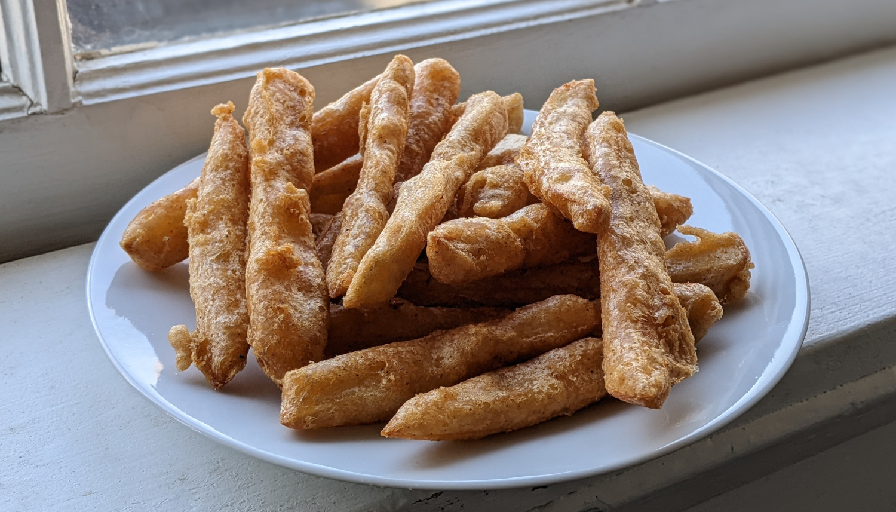

Beer-Battered French Fries

Author: Derek Nichols |
Cooked: March 26, 2022
Yields: 8 Servings | Prep Time: 30 Minutes | Cook Time: 60 Minutes
Ingredients
- 2.5 lbs russet potatoes (~3-4 medium potatoes)
- Oil, for frying (preferably peanut, but vegetable works fine)
- 3/4 c. flour
- 1/4 c. cornstarch
- 1 tsp paprika
- 1/2 tsp baking powder
- 1/2 tsp garlic powder
- 1/2 tsp onion powder
- 1/4 tsp cayenne pepper
- 2 tsp salt
- 1/2 tsp black pepper
- 1 can light beer, such as pilsner (we used Miller Lite)
Directions
- Wash and peel the potatoes. Cut them into your preferred "fry-sized dimensions" and soak in cold water.
- In a medium bowl, whisk together dry ingredients. Add 1 cup beer and stir until smooth, adding more beer if necessary until the batter is the consistency of heavy cream. Set aside.
- Fill a medium Dutch oven with 3-4" of oil and heat to 325°F.
- Take a handful of fries, dry them with a kitchen towel, and put into oil. Be careful not to crowd the pot or else your fries will not cook properly (learned this from experience). Cook until lightly golden (~5 minutes), and move fries to a paper towel lined baking sheet and sprinkle with salt.
- Once all fries are par-cooked, raise oil temperature to 350°F. In small batches (~10 fries) dip the fries in the batter, and, using a fork, place into the oil one at a time. Cook for 2-3 minutes or until deep golden brown. As the fries cook, make sure that they dont stick to the bottom of the pot or to one another. Remove from oil onto fresh paper towels to drain, and sprinkle again with salt.
Additional Notes
- Your preferred "fry-sized" dimensions can vary. Do you want thin fries? 1/4" x 1/4". Like thicker fries? 1/2" x 1/2". Steak fries? 1/2" x 1". There are no rules. Go nuts.
- This made the perfect amount of batter for 2.5 lbs of potatoes.
- This makes A LOT of fries.
- Oil is the enemy to crispy fries here. When placing finished fries on the paper towel, make sure that the paper towels aren't saturated with oil or else the oil won't leave the fries making them soggy and oily.